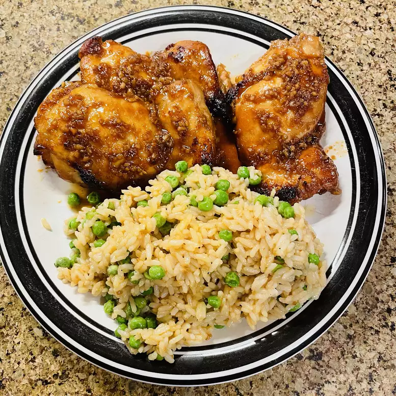

Asian Glazed Chicken Thighs

Description
These Asian chicken thighs are slightly spicy but the sweetness tames the heat. Delicious served with rice.
Ingredients
- ½ cup rice vinegar
- ⅓ cup soy sauce
- 5 tablespoons honey
- ¼ cup Asian (toasted) sesame oil
- 3 tablespoons Asian chili garlic sauce
- 3 tablespoons minced garlic
- salt to taste
- 8 skinless, boneless chicken thighs
- 1 tablespoon chopped green onion (Optional)
Steps
- Place chicken in a large glass or ceramic bowl.
- Whisk soy sauce, brown sugar, garlic, and ginger for marinade together in a small bowl; pour over chicken and toss to evenly coat.
- Cover the bowl with plastic wrap and marinate in the refrigerator, 8 hours to overnight.
- Preheat an outdoor grill for medium heat and lightly oil the grate.
- Combine mayonnaise, sesame oil, sugar, and ginger for dressing in a small bowl. Cover and refrigerate while you cook the chicken.
- Remove chicken from the marinade and shake off excess. Discard the remaining marinade.
- Cook chicken on the preheated grill until no longer pink in the center and the juices run clear, about 10 minutes.
- Remove from the grill and chop when cool enough to handle.
- While the chicken is cooking, place sesame seeds in a dry pan over medium-high heat. Shake the pan like you are making popcorn and toast until seeds give off a lovely toasted smell, 3 to 5 minutes.
- Quickly remove from the heat and transfer to a bowl to cool; if you leave them in the pan they will continue to cook and burn.
- Place napa cabbage, green cabbage, and carrot in a large bowl with chicken and toasted sesame seeds. Toss together, then mix in the dressing.